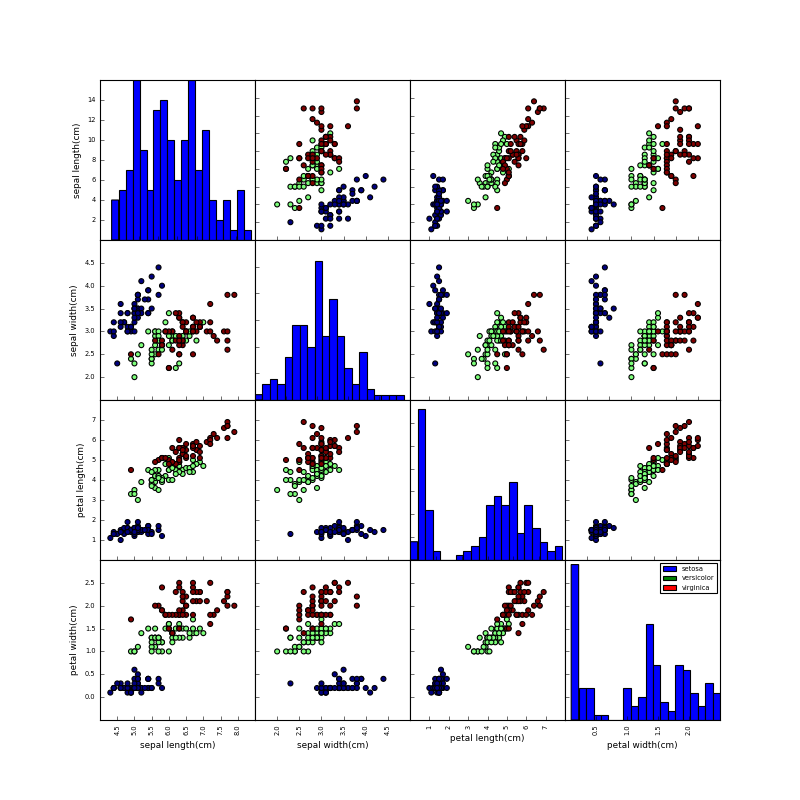

Welcome to task4’s documentation!¶
Created on Wed Feb 8 03:16:41 2017
@author: amla_srivastava
Plot the iris dataset as a pairplot.
Notes¶
The code uses the inbuilt iris dataset present in skikit-learn. It attempts to re-create the output of the pairplot function in pandas using only numpy and matplotlib.
#!/usr/bin/env python2
# -*- coding: utf-8 -*-
"""
Created on Wed Feb 8 03:16:41 2017
@author: amla_srivastava
Plot the iris dataset as a pairplot.
Notes
-----
The code uses the inbuilt iris dataset present in skikit-learn. It attempts
to re-create the output of the pairplot function in pandas using only numpy
and matplotlib.
"""
import numpy as np
import matplotlib.pyplot as plt
from sklearn.datasets import load_iris
label_size = 6
plt.rcParams['xtick.labelsize'] = label_size
plt.rcParams['ytick.labelsize'] = label_size
iris = load_iris()
X,y = iris.data, iris.target
fig, ax = plt.subplots(4,4, figsize = (10,10))
plt.subplots_adjust(wspace=0, hspace=0)
names = ['sepal length(cm)', 'sepal width(cm)', 'petal length(cm)', 'petal width(cm)']
for i in range(0,4):
for j in range(1,4):
ax[i,j].set_yticklabels([])
for i in range(0,4):
for j in range(0,4):
ax[i,j].yaxis.set_ticks_position('left')
ax[i,j].xaxis.set_ticks_position('bottom')
if i == j:
ax[i,j].hist(X[:,j], bins = 20)
else:
ax[i,j].scatter(X[:,j],X[:,i], c = y)
labels = ax[i,j].get_xticklabels()
for label in labels:
label.set_rotation(90)
make_invisible = True
if (make_invisible):
xticks = ax[i,j].xaxis.get_major_ticks()
xticks[0].label1.set_visible(False)
xticks[-1].label1.set_visible(False)
if (make_invisible):
yticks = ax[i,j].yaxis.get_major_ticks()
yticks[0].label1.set_visible(False)
yticks[-1].label1.set_visible(False)
for i in range(0,4):
ax[i,0].set_ylabel(names[i],fontsize = 8)
ax[3,i].set_xlabel(names[i], fontsize = 8)
import matplotlib.patches as mpatches
classes = ['setosa','versicolor','virginica']
class_colours = ['b','g','r']
recs = []
for i in range(0,3):
recs.append(mpatches.Rectangle((0,0),1,1,fc=class_colours[i]))
plt.legend(recs,classes,loc=1,prop={'size':6})
(Source code, png, hires.png, pdf)
{kind=link}
{kind=link}
